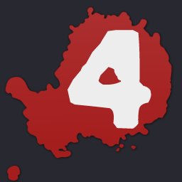
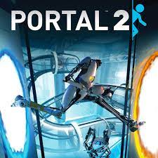

Primer Articulo
Esta Pagina fue creada con el proposito de adquirir nuevos conocimientos conrespecto al lenguaje de programacion HTML5. Cualquier Imagen o liga mostrada es solo para representar los conocimientos adquirios hasta el momento UgU.

Esta Pagina fue creada con el proposito de adquirir nuevos conocimientos conrespecto al lenguaje de programacion HTML5. Cualquier Imagen o liga mostrada es solo para representar los conocimientos adquirios hasta el momento UgU.
| Celda 1 | Celda 2 | Celda 3 |
| Celda 4 | Celda 5 | Celda 6 |
| Celda 7 | Celda 8 | Celda 9 |
| Celda 10 | Celda 11 | Celda 12 |
|  |

|
 |